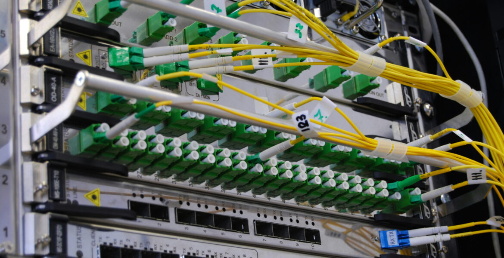

Orange Business
Service aux professionnels et entreprises
Présentation du Groupe
Entreprise française de télécommunication historique, Orange est l'un des principaux opérateurs dans le monde et le leader incontesté en France.
Au-delà de la téléphonie grand public, la branche Orange Business accompagne les entreprises dans leur transformation digitale : connectivité, cybersécurité, cloud et gestion des données.
Chiffres Clés (2023)
- 44,12 milliards € de chiffre d'affaires.
- 137 000 collaborateurs dans le monde.
- Leader en France (environ 36% de PDM mobile).
- Présent dans 26 pays.
Mon site d'affectation : Orange Villabé (91)
J'effectue mon alternance sur le site d'Orange situé à Villabé, dans l'Essonne. Ce site est un pôle stratégique pour le déploiement technique et le support des entreprises de la région.
Mon service est dédié aux clients professionnels (B2B), dont les exigences en termes de disponibilité réseau (SLA) et de sécurité sont extrêmement élevées.
Mon rôle : Technicien Réseau Entreprise
En tant que technicien réseau, mon rôle est d'assurer le maintien en conditions opérationnelles (MCO) et le déploiement des infrastructures chez nos clients. Mes missions s'articulent autour de 3 axes principaux :
1. Installation & Config
Mise en place physique et configuration logique des équipements chez le client (Routeurs, Switchs, Box professionnelles, bornes Wi-Fi, téléphonie IP).
2. Support & Maintenance
Diagnostic de pannes (troubleshooting), tests de connectivité, remplacement de matériel défectueux et résolution rapide des incidents pour garantir la continuité de service.
3. Interventions sur site
Travail en mobilité avec de fréquents déplacements directement dans les locaux des entreprises clientes pour répondre à leurs besoins avec un haut niveau de professionnalisme.
Environnement Technique
Pour mener à bien mes missions chez Orange, je manipule quotidiennement divers outils et équipements matériels :
